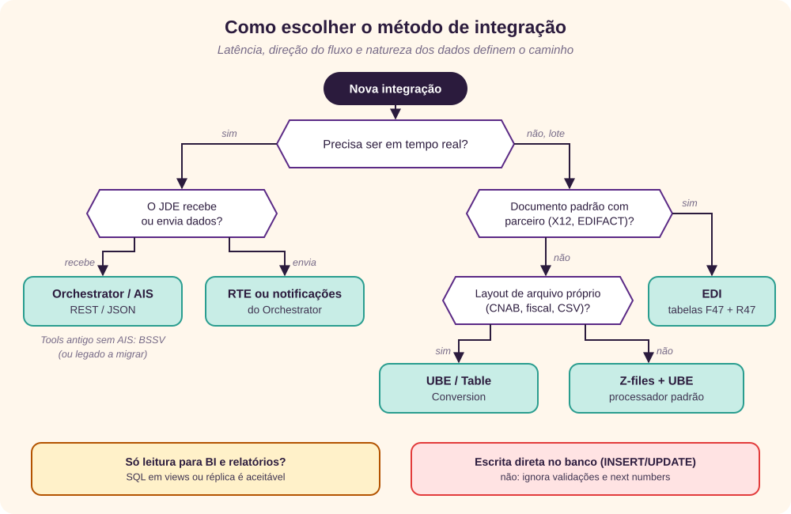
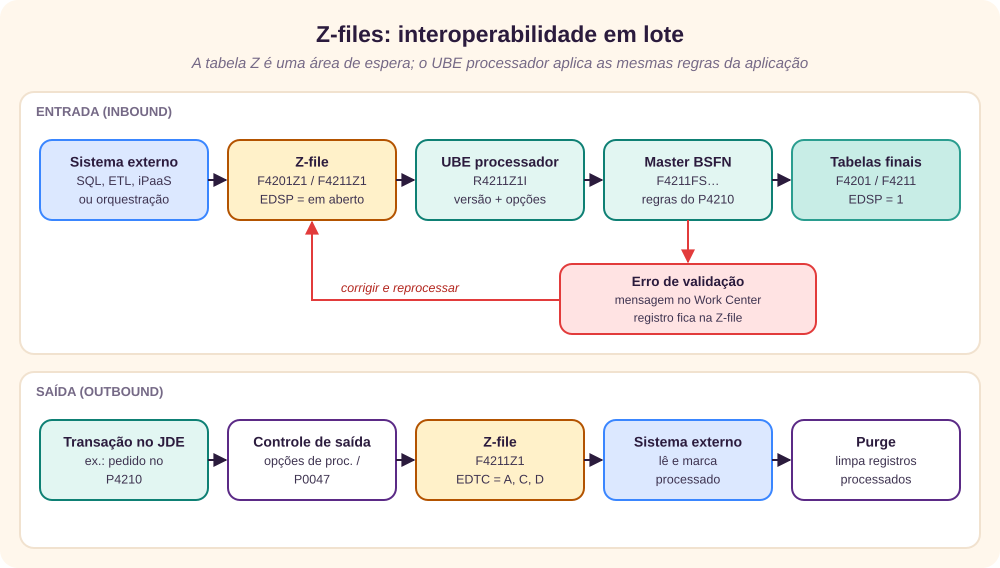
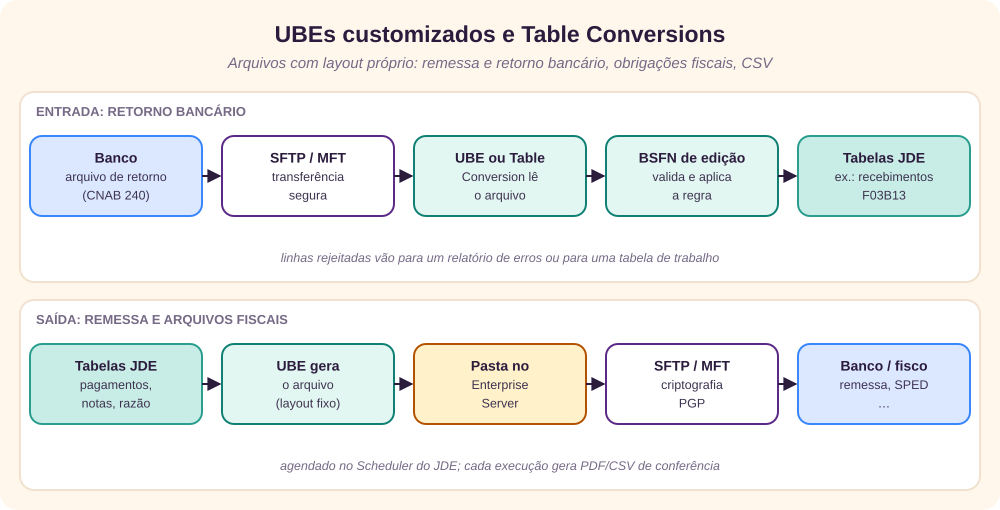
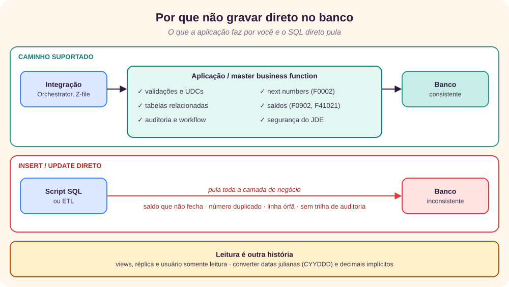

Como escolher
No JD Edwards EnterpriseOne existem várias formas de integração. A escolha depende principalmente de três coisas: se a interface é em tempo real ou em lote, se o JDE envia ou recebe os dados, e qual versão do Tools Release você usa. [7] [15]
Por trás das três perguntas há um princípio que vale para todas as opções: as regras de negócio do JDE moram nas aplicações e nas business functions, não no banco de dados. Toda integração que grava dados precisa passar por essa camada. O que muda de uma opção para outra é a porta de entrada, o protocolo e a latência.
- Latência. Tempo real significa uma transação por chamada, com resposta em segundos, quase sempre síncrona. Lote significa volumes grandes processados em janelas, com a possibilidade de corrigir e reprocessar o que falhou.
- Direção. Entrada é quando o JDE recebe dados (um pedido criado por um portal). Saída é quando o JDE envia ou avisa (um pedido aprovado que precisa chegar ao armazém). Algumas opções servem aos dois sentidos.
- Tools Release. É a versão da base técnica do JDE, independente da versão das aplicações (9.2). O Orchestrator existe no Tools 9.2 e ganha recursos a cada atualização; ambientes em Tools antigos dependem de Business Services ou de conectores. [5]

Glossário mínimo
- AIS Server
- Application Interface Services: servidor que expõe o JDE como serviços REST com JSON.
- Orchestrator
- Motor que roda no AIS Server e executa orquestrações, sequências de passos desenhadas no Orchestrator Studio.
- Tools Release
- Versão da camada técnica do JDE (runtime, servidores, ferramentas), atualizada separadamente das aplicações.
- UBE
- Universal Batch Engine: programa em lote (relatório ou processo), identificado por um R, como R09110Z.
- BSFN
- Business function: função reutilizável em C ou em NER (Named Event Rules, gerada em C).
- MBF
- Master business function: BSFN que encapsula uma transação inteira, como o pedido de venda.
- Z-file
- Tabela de interoperabilidade (interface table) usada como área de espera para lotes.
- OMW e UDO
- Object Management Workbench controla objetos de desenvolvimento; UDOs (user defined objects) são objetos criados por usuários, como orquestrações.
- JDENET
- Protocolo interno de comunicação entre os servidores do JDE.
- CNC
- Configurable Network Computing: a administração técnica do JDE (servidores, pacotes, segurança).
Onde cada opção se encaixa
Uma instalação do JDE tem vários servidores, e cada opção de integração conversa com um deles. O Enterprise Server executa as business functions e os UBEs. O HTML Server (JAS) executa as aplicações web. O AIS Server, o Business Services Server e o Transaction Server são servidores Java em WebLogic (ou WebSphere, em alguns casos), instalados e administrados pelo Server Manager. [4]
Para o arquiteto de infraestrutura, cada servidor adicional é uma instância a dimensionar, atualizar, monitorar e proteger. As versões suportadas de WebLogic, Java, sistema operacional e banco são definidas pela matriz de certificações da Oracle para o Tools Release em uso.
Orchestrator e AIS Server
- Direção
- Entrada e saída
- Latência
- Tempo real ou agendado
- Protocolo
- REST / JSON sobre HTTPS
- Posição da Oracle
- Caminho recomendado
Explicação conceitual e técnica
O AIS Server é um servidor de serviços REST que, configurado junto com o HTML Server, dá acesso a formulários e dados do EnterpriseOne por JSON sobre HTTP. [3] O Orchestrator usa o AIS Server como base e processa as orquestrações salvas nele para transformar dados externos em processos de negócio no JDE. [1]
Conceitualmente, ele é uma fachada de API: quem chama não precisa saber qual tela, versão ou business function usar. Chama um endpoint com nome de negócio, como CriarPedidoVenda, e a orquestração cuida do resto. Isso separa o contrato da integração da implementação dentro do JDE.
Tecnicamente, uma orquestração é uma sequência de passos chamados service requests: [2]
- Form request: executa uma aplicação interativa como um usuário faria, preenchendo campos e apertando botões. As event rules e validações da tela rodam normalmente.
- Data request: consulta tabelas ou business views, com filtros e agregações.
- Business function e report: chama uma BSFN diretamente ou dispara um UBE.
- Custom: executa lógica própria em Groovy ou Java.
- Connector: dá acesso seguro a recursos externos, como um serviço REST, um banco de dados ou uma orquestração de outro sistema JDE. [5]
- Message: envia e-mail ou mensagem para o Work Center.
Regras (condições), cross-references e white lists traduzem códigos e decidem o caminho. As notificações avaliam dados do JDE ou de serviços REST externos para detectar situações que pedem atenção, e o agendador embutido executa orquestrações e notificações periodicamente. [5] [6] Desde o Tools 9.2.4, o Orchestrator Studio é instalado junto com o AIS Server e acessado pela própria URL dele. [1]
A grande vantagem é que as regras de negócio das telas do JDE são respeitadas: um form request sobre o P4210 passa pelas mesmas validações, versões e opções de processamento que um usuário digitando o pedido.
Arquitetura mínima e recomendada
| Aspecto | Mínima | Recomendada |
|---|---|---|
| Servidores | 1 AIS Server (WebLogic) ligado a 1 HTML Server, criados pelo Server Manager | AIS dedicado a integrações, separado do que atende usuários; 2 ou mais instâncias atrás de um balanceador, cada uma com HTML Server próprio |
| Tools Release | Tools 9.2 com Orchestrator | Tools Release atual, para ter Studio integrado, conectores, notificações e OAuth 2.0 nas chamadas de saída [5] |
| Exposição | HTTPS apenas na rede interna | API gateway ou proxy reverso com TLS, WAF, limite de requisições e lista de IPs; nunca o AIS direto na internet |
| Identidade | Usuário JDE de serviço com senha | Um usuário de serviço por integração, role mínima, token AIS ou OAuth, segredos em cofre |
| Ambientes | Desenvolvimento e produção | DV, PY e PD, com orquestrações promovidas como UDOs aprovados e testes de regressão |
| Operação | Logs do AIS no Server Manager | Monitoramento de latência e erros, alertas e um identificador de correlação por chamada |
Conhecimentos necessários
| Perfil | O que precisa saber |
|---|---|
| Desenvolvedor JDE | Aplicações, versões e opções de processamento; Orchestrator Studio; form e data requests; Groovy básico; JSON |
| Arquiteto de solução | Desenho de APIs REST, contratos, idempotência, tratamento de erro síncrono, padrões de iPaaS |
| CNC e infraestrutura | Server Manager, WebLogic, balanceamento, certificados TLS, dimensionamento |
| Segurança | Security Workbench, segurança de UDOs, tokens e OAuth, políticas do gateway |
| Analista de negócios | Regras da tela que será automatizada, versões usadas e exceções do processo |
Quando é útil
- Portais e e-commerce que criam pedidos, consultam preço, saldo ou status em tempo real.
- iPaaS (Oracle Integration, MuleSoft, Boomi) conectando o JDE a SaaS como CRM, WMS ou transportadoras.
- Aplicativos móveis de aprovação, apontamento de produção ou inspeção.
- IoT: sensores que geram ordens de manutenção ou registram leituras.
- Automação de tarefas repetitivas de digitação, no lugar de robôs de tela.
- Saída: o JDE chamando APIs externas por meio de conectores, ou avisando pessoas com notificações.
Exemplos
Um portal cria um pedido de venda chamando uma orquestração que, por dentro, usa um form request sobre o P4210 com a versão da loja virtual:
# chamada ilustrativa, passando pelo API gateway
POST https://api.empresa.com/jde/v3/orchestrator/ORCH_CriarPedidoVenda
Authorization: Bearer <token>
Content-Type: application/json
{ "Cliente": "4242", "Filial": "M30", "PedidoCliente": "PO-4500123",
"Itens": [ { "Item": "220", "Quantidade": 5 } ] }
# resposta
{ "NumeroPedido": "12345", "TipoPedido": "SO", "Status": "520" }- IoT: um sensor de temperatura envia leituras; uma regra na orquestração cria uma ordem de manutenção quando o limite é ultrapassado.
- Notificação: todo dia às 8h, pedidos retidos por crédito acima de um valor geram uma mensagem para o gerente financeiro.
- Saída: ao aprovar um fornecedor, uma orquestração chama por conector a API de um serviço de validação cadastral.
Z-files (tabelas de interoperabilidade)
- Direção
- Entrada e saída
- Latência
- Lote (minutos a horas)
- Protocolo
- Tabela + UBE processador
- Posição da Oracle
- Padrão para lotes
Explicação conceitual e técnica
As Z-files são o método clássico para cargas em lote. Cada uma é uma interface table com as colunas da tabela de aplicação e mais campos de controle. O nome segue a tabela de origem com o sufixo Z1: a F4211 tem a F4211Z1. Quando a tabela de interface passaria de 250 colunas, cria-se uma tabela adicional com uma letra depois do sufixo, como F4211Z1A. [8]
Os campos de controle formam a chave e o estado de cada registro: usuário (EDUS), lote (EDBT), número da transação (EDTN), linha (EDLN), indicador de processado (EDSP), ação (EDTC: A para incluir, C para alterar, D para excluir) e tipo de transação (EDTR). [7]
Na entrada, um sistema externo grava na Z-file e depois roda o UBE processador, por exemplo o R09110Z para lançamentos contábeis ou o R4211Z1I para pedidos de venda. O processador lê os registros ainda não processados, chama a master business function com a versão definida nas opções de processamento e grava nas tabelas definitivas. Os registros com erro ficam na Z-file, a mensagem vai para o Work Center, e é possível corrigi-los e reprocessá-los. [7]
Também funciona como saída: as opções de processamento da aplicação ou os controles de exportação (P0047) fazem o JDE gravar cada transação na Z-file, com o código de ação, para um sistema externo ler. [9] É robusto e aproveita a validação padrão, mas não é tempo real.
| Z-file | Conteúdo | Processador de entrada |
|---|---|---|
| F0911Z1 | Lançamentos contábeis | R09110Z |
| F0101Z2 | Cadastro de endereços (Address Book) | R01010Z |
| F4201Z1 / F4211Z1 | Pedidos de venda | R4211Z1I |
| F4301Z1 / F4311Z1 | Pedidos de compra | R4311Z1I |
| F4101Z1 | Cadastro de itens | R4101Z1I [7] |
| F0411Z1 | Vouchers de contas a pagar | R04110ZA |

Arquitetura mínima e recomendada
| Aspecto | Mínima | Recomendada |
|---|---|---|
| Servidores | Enterprise Server e banco existentes; nada novo | Fila de batch dedicada aos processadores e execução pelo Scheduler do JDE |
| Carga | Script ou ETL grava nas Z-files | Carga por orquestração ou iPaaS, com lote (EDBT) por execução e EDTN único para garantir idempotência |
| Acesso ao banco | Usuário com INSERT nas Z-files | Permissão somente nas Z-files, nunca nas tabelas finais, com auditoria no banco |
| Erros | Work Center | Painel de pendências por interface, alerta ao responsável e rotina de purge dos processados |
| Volume | Uma execução por dia | Janelas definidas, lotes particionados e versões do processador por origem |
Conhecimentos necessários
| Perfil | O que precisa saber |
|---|---|
| Desenvolvedor | Layout da Z-file, campos obrigatórios, datas julianas, decimais implícitos, códigos de ação |
| Analista funcional | Versões e opções de processamento do processador e da aplicação espelhada |
| CNC | Filas de batch, Scheduler, permissões de banco |
| Operação | Work Center, aplicações de revisão da Z-file, reprocessamento e purge |
Quando é útil
- Migrações e cargas iniciais de cadastros e saldos.
- Contabilização de sistemas satélites: folha de pagamento, faturamento externo, despesas de viagem.
- Pedidos de e-commerce ou de força de vendas consolidados em lote.
- Interfaces noturnas de grande volume, em que reprocessar é mais importante do que responder na hora.
Exemplos
A folha de pagamento gera os lançamentos contábeis do mês na F0911Z1 e dispara o R09110Z:
-- ilustrativo: um lançamento de 150,00 (decimais implícitos) em 28/09/2026
INSERT INTO PRODDTA.F0911Z1
(VNEDUS, VNEDTN, VNEDLN, VNEDBT, VNEDSP, VNEDTC, VNDCT, VNDGJ, VNANI, VNAA, VNLT)
VALUES
('INTFOLHA', '000123', 1000, 'FOLHA0926', ' ', 'A', 'JE',
126271, '100.8150', 15000, 'AA');
-- 126271 = ano 2026 (1 + 26) e dia 271 do ano
-- depois: R09110Z, versão da folha; lotes seguem para aprovação e lançamentoNa saída, uma versão do P4210 configurada para gravar a F4211Z1 permite que um sistema de logística leia cada pedido incluído ou alterado e marque os registros como processados.
Business Services (BSSV)
- Direção
- Entrada e saída
- Latência
- Tempo real
- Protocolo
- SOAP / XML sobre HTTPS
- Posição da Oracle
- Suportado, perdendo espaço
Explicação conceitual e técnica
Business Services são classes Java desenvolvidas no JDeveloper, controladas no OMW como qualquer objeto do JDE e publicadas como web services num Business Services Server em WebLogic ou WebSphere. [10] [11]
Um published business service é um objeto do OMW que representa uma classe Java que publica várias operações. [10] Ele delega a business services internos, que trabalham com value objects e chamam business functions e acessos a dados pela API de tempo de execução do JDE. A Oracle entrega vários serviços prontos (clientes, fornecedores, itens, pedidos, estoque), e você pode criar os seus.
O caminho inverso também existe: o JDE pode ser consumidor de web services. Uma business function chama um business service consumidor, que chama o serviço externo e devolve a resposta à lógica do JDE.
Ainda é bastante usado, mas vem perdendo espaço para o AIS e o Orchestrator: SOAP é mais pesado, e cada mudança exige ciclo de desenvolvimento Java, build de pacote e deploy no servidor, enquanto uma orquestração se ajusta no Studio.
Arquitetura mínima e recomendada
| Aspecto | Mínima | Recomendada |
|---|---|---|
| Servidores | 1 Business Services Server (WebLogic ou WebSphere) pelo Server Manager | 2 ou mais instâncias com balanceador, separadas dos HTML Servers |
| Desenvolvimento | JDeveloper na versão certificada, no cliente de desenvolvimento | Pacotes com revisão de código e deploy padronizado por ambiente |
| Segurança | HTTPS e usuário JDE | WS-Security, políticas no gateway ou no service bus, usuário por consumidor |
| Operação | Logs do WebLogic | Monitoramento de tempo de resposta e de falhas por operação |
Conhecimentos necessários
| Perfil | O que precisa saber |
|---|---|
| Desenvolvedor | Java, JAX-WS, WSDL e XSD, JDeveloper, OMW, business functions chamadas |
| CNC e infraestrutura | WebLogic ou WebSphere, Server Manager, deploy de pacotes, certificados |
| Segurança | WS-Security, SAML ou UsernameToken, políticas de serviço |
Quando é útil
- Integrações SOAP já existentes e estáveis.
- Middleware SOA (Oracle SOA Suite, service bus) que espera contratos WSDL.
- Lógica complexa em Java que não cabe bem num script Groovy.
- Ambientes sem AIS Server. Em projetos novos, prefira o Orchestrator e planeje a migração dos BSSV existentes.
Exemplos
<!-- ilustrativo: chamada ao serviço de pedidos de venda (JP420000) -->
<soapenv:Envelope xmlns:soapenv="http://schemas.xmlsoap.org/soap/envelope/">
<soapenv:Header>
<wsse:Security> … usuário e token … </wsse:Security>
</soapenv:Header>
<soapenv:Body>
<processSalesOrder>
<header> <customer>4242</customer> <businessUnit>M30</businessUnit> </header>
<detail> <item>220</item> <quantity>5</quantity> </detail>
</processSalesOrder>
</soapenv:Body>
</soapenv:Envelope>Outro caso comum: um middleware SOA que já orquestra vários ERPs chama os serviços publicados de cliente e de item para manter cadastros sincronizados.
Real-Time Events (RTE)
- Direção
- Saída
- Latência
- Tempo real, assíncrono
- Protocolo
- XML sobre JMS, MQ ou HTTP
- Posição da Oracle
- Suportado
Explicação conceitual e técnica
Um real-time event é uma notificação de saída para um sistema terceiro de que uma transação de negócio ocorreu no JDE. [12] O modelo é publicar e assinar: o JDE publica o evento uma vez, e cada assinante recebe a sua cópia.
Tecnicamente, as business functions das transações geram o evento em XML (por exemplo, RTSOOUT para pedidos de venda). Os kernels de eventos do Enterprise Server passam o evento ao Transaction Server, que usa filas e tópicos JMS para garantir a entrega e roteia a informação para as filas de cada assinante com assinatura ativa. [12] Os transportes incluem JMS, MQ Series e conectores, e os assinantes são cadastrados no P90702A. [14]
Há três famílias de eventos: Z events, gerados a partir das Z-files de saída; real-time events, gerados pelas business functions no momento da transação; e XAPI, em que o JDE envia uma requisição e espera a resposta do sistema externo. [13] O destino pode ser uma fila JMS ou MQ, um web service via BSSV ou o Orchestrator, e nos Tools recentes as notificações do Orchestrator são uma alternativa mais simples para muitos casos.
Arquitetura mínima e recomendada
| Aspecto | Mínima | Recomendada |
|---|---|---|
| Servidores | 1 Transaction Server (WebLogic) e kernels de eventos ativos no Enterprise Server | Store JMS persistente em banco, alta disponibilidade do WebLogic e servidor dedicado |
| Eventos | Eventos ativados no P90701A e assinantes no P90702A | Só os eventos realmente consumidos, com dono e contrato (XSD) documentados |
| Consumidores | Um middleware lendo a fila | Consumidores idempotentes, fila de mensagens mortas e reprocessamento |
| Operação | Console do WebLogic | Alertas de profundidade de fila, idade da mensagem mais antiga e falhas de entrega |
Conhecimentos necessários
| Perfil | O que precisa saber |
|---|---|
| Arquiteto de solução | Mensageria: publicar e assinar, entrega pelo menos uma vez, ordenação, idempotência |
| Desenvolvedor | XML e XSD dos eventos, consumo de JMS ou MQ |
| CNC e infraestrutura | Transaction Server, JMS no WebLogic, jde.ini dos kernels de eventos |
| Analista de negócios | Quais transações importam para quem, e com que dados |
Quando é útil
- CRM, WMS ou e-commerce precisam saber na hora que um pedido foi criado, alterado ou faturado.
- Sincronizar cadastros mestres (clientes, fornecedores, itens) com um MDM.
- Alimentar um data lake ou uma plataforma de streaming com as transações.
- Disparar workflows externos sem consultas periódicas ao banco.
Exemplos
<!-- ilustrativo: evento de pedido de venda entregue na fila do assinante -->
<jdeResponse type="realTimeEvent" environment="PD920">
<event>
<header> <eventName>RTSOOUT</eventName> <user>VENDAS01</user> </header>
<detail> <orderNumber>12345</orderNumber> <orderType>SO</orderType> … </detail>
</event>
</jdeResponse>Um WMS assina o evento de pedido e, a cada pedido liberado, recebe a mensagem e cria a onda de separação, sem consultar o JDE.
UBEs customizados e Table Conversions
- Direção
- Entrada e saída
- Latência
- Lote
- Protocolo
- Arquivo texto, CSV, layout fixo
- Posição da Oracle
- Ferramenta padrão do JDE
Explicação conceitual e técnica
UBEs customizados e Table Conversions servem para leitura ou gravação de arquivos texto ou CSV, geração de flat files e conversões entre tabelas. Um UBE pode ler um arquivo, chamar as business functions de edição e gravar os dados. [15] [23] [24]
A Table Conversion é um tipo de programa em lote feito para mover e transformar dados: de tabela para tabela, de arquivo para tabela ou de tabela para arquivo, com mapeamento de colunas e event rules. O UBE escrito no Report Design Aid dá mais controle: lê o arquivo linha a linha, interpreta registros de cabeçalho, detalhe e trailer, chama business functions e gera um relatório de conferência.
Um padrão robusto é combinar as opções: o UBE ou a Table Conversion apenas converte o arquivo para a Z-file, e o processador padrão faz a validação e a gravação. Assim a regra de negócio continua com a Oracle, e o código customizado fica só com o layout.
É comum em interfaces bancárias (no Brasil, os layouts CNAB de remessa e retorno) e em arquivos fiscais ou de parceiros que não usam EDI.

Arquitetura mínima e recomendada
| Aspecto | Mínima | Recomendada |
|---|---|---|
| Servidores | Enterprise Server com uma pasta acessível | Pastas por ambiente e por interface (entrada, processados, erros), com retenção definida |
| Transferência | Cópia manual ou compartilhamento de rede | SFTP ou MFT, criptografia PGP, verificação de integridade e antivírus |
| Agendamento | Execução manual | Scheduler do JDE, com dependências e alertas de falha |
| Controle | Relatório do UBE | Totais de controle (trailer), nome de arquivo com data e hora e bloqueio de arquivo repetido |
Conhecimentos necessários
| Perfil | O que precisa saber |
|---|---|
| Desenvolvedor | Report Design Aid, event rules, Table Conversion, business functions de edição, codificação de caracteres |
| Analista de negócios | Layout do banco ou do órgão, regras de conciliação, códigos de ocorrência |
| CNC e infraestrutura | Sistema de arquivos, permissões, MFT, Scheduler |
| Segurança | Chaves PGP e SSH, segregação de pastas, retenção |
Quando é útil
- Remessa de pagamentos e cobrança, retorno bancário e extratos.
- Arquivos para órgãos fiscais ou para sistemas de terceiros com layout fixo.
- Clientes e fornecedores que trocam planilhas CSV em vez de EDI.
- Exportações para sistemas legados que só leem arquivos.
Exemplos
// ilustrativo: lógica de um UBE que lê o retorno bancário
Para cada linha do arquivo
Se tipo de registro = "3" e segmento = "T"
extrair nosso número, valor pago e data de crédito
localizar a fatura em aberto (F03B11)
chamar a business function de recebimento
Se erro: gravar a linha na tabela de rejeitados
Fim
imprimir o resumo: linhas lidas, baixadas, rejeitadas, totalNa saída, um UBE agendado gera todo dia útil o arquivo de remessa de pagamentos aprovados, que o MFT envia ao banco já criptografado.
Business functions (BSFN em C ou NER)
- Direção
- Principalmente entrada
- Latência
- Depende de quem chama
- Protocolo
- Chamada interna do JDE
- Posição da Oracle
- Bloco de construção
Explicação conceitual e técnica
Business functions podem ser escritas em C ou em NER (Named Event Rules, que o JDE converte em C). As master business functions encapsulam uma transação inteira e seguem um ciclo: BeginDoc valida o cabeçalho e abre o cache, EditLine valida cada linha, EditDoc confere o documento e EndDoc obtém os next numbers e grava tudo. Para pedidos de venda, a família é F4211FSBeginDoc, F4211FSEditLine, F4211FSEditDoc e F4211FSEndDoc. [21] [22]
Até o EndDoc, os dados ficam no cache do JDE, o que permite validar o documento inteiro antes de gravar. O artigo Cache no JD Edwards explica esse mecanismo em detalhe. [20]
Normalmente as BSFNs são acionadas a partir de um UBE, do BSSV ou do Orchestrator, e não isoladamente por um sistema externo: elas precisam de um contexto de execução do JDE (usuário, ambiente, transação), que o programa hospedeiro fornece.
Arquitetura mínima e recomendada
| Aspecto | Mínima | Recomendada |
|---|---|---|
| Servidores | Enterprise Server e cliente de desenvolvimento | Nada além do hospedeiro escolhido (UBE, AIS ou BSSV) |
| Código | Chamada direta às MBFs padrão | BSFN customizada só quando necessário, com revisão de código e testes de regressão |
| Erros | Código de erro de retorno | Limpeza do cache em caso de falha (por exemplo, F4211ClearWorkFiles) e mensagens tratadas |
Conhecimentos necessários
| Perfil | O que precisa saber |
|---|---|
| Desenvolvedor | C e APIs do JDE, data structures, NER, cache, depuração de BSFN, OMW |
| Analista funcional | A transação, suas versões e opções de processamento |
Quando é útil
- Dentro de um UBE customizado que lê arquivo e precisa gravar uma transação.
- Num passo de orquestração quando o form request não é adequado, por desempenho ou por uma tela complexa.
- Na implementação de business services.
Exemplos
// ilustrativo: criação de um pedido de venda num UBE
F4211FSBeginDoc (modo = incluir, versão P4210 = "ZJDE0001", cliente, filial) → número de job
Para cada linha
F4211FSEditLine (número de job, item, quantidade, preço)
F4211FSEditDoc (número de job)
F4211FSEndDoc (número de job) → número do pedido gravado
Se erro em qualquer passo: F4211ClearWorkFiles e registrar a falhaEDI
- Direção
- Entrada e saída
- Latência
- Lote, em ciclos curtos
- Protocolo
- X12 ou EDIFACT via tradutor
- Posição da Oracle
- Padrão para B2B
Explicação conceitual e técnica
O módulo Data Interface for Electronic Data Interchange (sistema 47) é a interface entre os dados do JDE e o software tradutor. [17] O tradutor, externo ao JDE, converte as mensagens padronizadas (X12, EDIFACT) em arquivos planos e vice-versa; o JDE lê e grava as tabelas F47xxx.
Na entrada de um pedido do cliente (850), o tradutor grava o cabeçalho na F47011 e as linhas na F47012; o R47011 lê essas tabelas, valida e cria o pedido de venda nas F4201 e F4211. [18] Como as F47 são uma área de espera, é possível inspecionar e corrigir os dados antes de eles virarem um pedido real. Na saída, o R47042 extrai as faturas para as tabelas de saída (F47046 e F47047), que o tradutor converte em 810.
O EDI é indicado para troca de documentos padronizados com clientes e fornecedores, geralmente junto com um tradutor EDI e um canal de comunicação (VAN ou AS2).
Arquitetura mínima e recomendada
| Aspecto | Mínima | Recomendada |
|---|---|---|
| Componentes | Tradutor (software ou serviço em nuvem), canal VAN ou AS2 e troca de arquivos com o Enterprise Server | Tradutor com monitoramento de confirmações (997 / CONTRL) e mapas versionados |
| Comunicação | VAN | AS2 com certificados e recibos (MDN), ou VAN gerenciada |
| Processamento | R47011 e R47042 agendados | Ciclos curtos, alertas de documentos sem confirmação e revisão diária de pendências |
| Testes | Teste com o parceiro em produção | Ambiente de homologação por parceiro antes de cada novo documento |
Conhecimentos necessários
| Perfil | O que precisa saber |
|---|---|
| Analista EDI | X12 ou EDIFACT, mapas do tradutor, cadastro de parceiros |
| Analista funcional JDE | Sistema 47, programas de entrada e saída, referências cruzadas de clientes e itens |
| Infraestrutura e segurança | AS2 ou VAN, certificados, transferência de arquivos |
| Analista de negócios | Acordos com cada parceiro, prazos e penalidades |
Quando é útil
- Varejo, distribuição, automotivo e grandes clientes que exigem EDI.
- Alto volume de pedidos, avisos de embarque e faturas com o mesmo parceiro.
- Quando o padrão do documento é imposto pelo parceiro e não negociável.
Exemplos
ISA*00*…~ (envelope)
ST*850*0001~
BEG*00*SA*PO4500123**20260928~ pedido do cliente → F47011
PO1*1*10*EA*12.50**BP*ITEM220~ linha → F47012
CTT*1~
SE*5*0001~
depois: R47011 cria o pedido de venda; o tradutor devolve o 997 ao clienteConectores legados
- Direção
- Entrada e saída
- Latência
- Tempo real
- Protocolo
- JDENET, XML, Java, COM
- Posição da Oracle
- Não usar em projetos novos
Explicação conceitual e técnica
Os conectores legados incluem: [16] [15]
- XML CallObject, XMLList, XMLTrans e XML Dispatch: documentos XML enviados ao Enterprise Server para chamar business functions, buscar listas ou gravar transações.
- Dynamic Java Connector: aplicações Java chamam business functions dinamicamente, com bibliotecas do JDE no lado cliente.
- COM Connector: integração com Visual Basic e VC++ por meio do modelo COM da Microsoft.
- XPI: integração com o Oracle Fusion Middleware de gerações anteriores.
Ainda existem em ambientes antigos, mas não são recomendados para projetos novos: acoplam o cliente ao protocolo interno JDENET e às bibliotecas de um Tools Release específico, não trazem os mecanismos atuais de segurança e são difíceis de monitorar.
Arquitetura mínima e recomendada
| Aspecto | Mínima | Recomendada |
|---|---|---|
| Rede | Porta JDENET acessível ao cliente | JDENET nunca acessível fora da rede dos servidores; se não houver alternativa, restringir por firewall a IPs conhecidos |
| Estratégia | Manter o que existe | Inventário de chamadas e plano de migração para orquestrações |
Conhecimentos necessários
Java, COM ou XML, conforme o conector; o protocolo JDENET; as business functions chamadas. Para a migração: Orchestrator e desenho de APIs REST.
Quando é útil
Apenas para manter integrações existentes enquanto a migração não acontece. Cada chamada inventariada costuma virar uma orquestração com o mesmo contrato de negócio.
Exemplos
<!-- ilustrativo: XML CallObject; repare na senha em texto dentro do documento -->
<jdeRequest type="callmethod" user="INTEGRA" pwd="********" environment="PD920">
<callMethod name="GetEffectiveAddress" app="Integracao">
<params> <param name="mnAddressNumber">4242</param> </params>
</callMethod>
</jdeRequest>Acesso direto ao banco (SQL)
- Direção
- Leitura
- Latência
- Imediata
- Protocolo
- SQL / JDBC / ODBC
- Posição
- Ler sim, gravar não
Explicação conceitual e técnica
Gravar direto no banco é tecnicamente possível, mas é desaconselhado. Um INSERT ou UPDATE ignora tudo o que a aplicação faz: validações contra o dicionário de dados e as UDCs, next numbers (F0002), tabelas relacionadas (compromissos de estoque na F41021, saldos contábeis na F0902), campos de auditoria (usuário, programa, data e hora), workflow e a segurança do JDE. O resultado costuma ser saldo que não fecha, número duplicado e registro órfão. A exceção é a própria Z-file, que foi feita para receber dados de fora.
Para leitura (relatórios, BI, views), é aceitável, desde que se respeitem as convenções do JDE:
- Datas julianas no formato CYYDDD: 126271 é o dia 271 de 2026, 28/09/2026.
- Decimais implícitos: valores são gravados como inteiros, com as casas definidas no dicionário de dados ou pela moeda. [25]
- UDCs: códigos precisam ser traduzidos pela F0005.
- Campos alinhados: a filial (MCU) tem 12 posições alinhadas à direita.
- A segurança por linha e por coluna do JDE não se aplica a quem lê o banco.

Arquitetura mínima e recomendada
| Aspecto | Mínima | Recomendada |
|---|---|---|
| Acesso | Usuário de banco somente leitura, restrito a views | Leitura numa réplica ou num repositório analítico, sem carga no banco de produção |
| Modelo | Consultas diretas às tabelas | Camada semântica que converte datas, decimais e UDCs uma única vez; carga incremental pelos campos de data de atualização |
| Proteção de dados | Controle de acesso ao usuário | Mascaramento de dados pessoais (LGPD) e trilha de consultas |
Conhecimentos necessários
SQL, modelo de dados do JDE (tabelas, business views, dicionário de dados), datas julianas, decimais implícitos e UDCs; do lado do DBA, réplicas e permissões. Para relatórios dentro do próprio JDE, o One View Reporting é uma alternativa que respeita a segurança do sistema. [26]
Quando é útil
- Data warehouse, data lake e painéis de BI.
- Consultas analíticas pesadas que não devem rodar dentro do JDE.
- Conferências e auditorias pontuais.
Exemplos
-- Oracle Database: linhas de pedido com data convertida
SELECT SDDOCO AS pedido,
SDDCTO AS tipo,
TRIM(SDLITM) AS item,
TO_DATE(TO_CHAR(SDTRDJ + 1900000), 'YYYYDDD') AS data_pedido,
SDAEXP / 100 AS valor -- 2 casas implícitas, conforme a moeda
FROM PRODDTA.F4211
WHERE SDNXTR < '999'; -- linhas ainda não encerradasComparativo, segurança e governança
| Opção | Direção | Latência | Regras do JDE | Esforço | Para projetos novos |
|---|---|---|---|---|---|
| Orchestrator / AIS | Entrada e saída | Tempo real | Sim | Baixo a médio | Recomendado |
| Z-files | Entrada e saída | Lote | Sim | Baixo | Recomendado para volume |
| BSSV | Entrada e saída | Tempo real | Sim | Alto | Só se já existir |
| RTE | Saída | Tempo real | Sim, na origem | Médio | Sim, para eventos |
| UBE / Table Conversion | Entrada e saída | Lote | Se chamar BSFN ou Z-file | Médio | Sim, para arquivos |
| Business functions | Entrada | Do hospedeiro | Sim | Alto | Como bloco interno |
| EDI | Entrada e saída | Lote | Sim | Médio a alto | Sim, para B2B |
| Conectores legados | Entrada e saída | Tempo real | Sim | Alto | Não |
| SQL direto | Leitura | Imediata | Não | Baixo | Só leitura |
Segurança em todas as opções
- Identidade: um usuário de serviço por integração, sem acesso interativo, com role mínima no Security Workbench; credenciais em cofre, nunca em scripts ou XML. [27]
- Transporte: TLS em tudo (AIS, BSSV, Transaction Server, SFTP, AS2); o JDENET fica restrito à rede dos servidores.
- Perímetro: API gateway ou proxy reverso, WAF, limite de requisições e lista de origens; servidores do JDE em zona interna.
- Dados: mínimo de dados pessoais em Z-files e arquivos, purge periódico, criptografia de arquivos em repouso e mascaramento em réplicas, em linha com a LGPD.
- Auditoria: campos de auditoria do JDE preenchidos com o usuário da integração, logs correlacionados e registro de quem aprovou cada orquestração.
Governança
- Catálogo de interfaces: dono de negócio, dono técnico, método, volume, SLA e procedimento de erro de cada integração.
- Fila de erros com responsável: Work Center, rejeitados de UBE e filas mortas precisam de alguém que olhe todo dia.
- Regressão: cada atualização de Tools, ESU ou versão pode mudar uma regra; as integrações entram no plano de testes.
- Custo total: além de licenças e servidores, conte as pessoas que operam e corrigem as interfaces.
Resumo
Para integrações novas e em tempo real, use o Orchestrator/AIS. Para volumes grandes em lote, as Z-files com os processadores padrão são o caminho mais seguro. Para avisar sistemas externos sobre eventos, use o RTE ou as notificações do Orchestrator.
Para fixar
- As regras de negócio estão nas aplicações e business functions; toda gravação deve passar por elas.
- Orchestrator: API REST montada no Studio, com as regras das telas.
- Z-files: área de espera + processador padrão; erros ficam para corrigir e reprocessar.
- BSSV e conectores legados: manter o que existe e planejar a migração.
- RTE: o JDE avisa; os assinantes precisam ser idempotentes.
- UBE e EDI: arquivos e documentos padronizados, com transferência segura.
- SQL: ler sim, gravar não.
Revisão rápida
1. Quais são as três perguntas que definem o método de integração?
Se é tempo real ou lote, se o JDE envia ou recebe os dados, e qual Tools Release está em uso.
2. Por que o Orchestrator respeita as regras de negócio?
Porque os form requests executam as aplicações como um usuário, com as mesmas event rules, versões e opções de processamento.
3. O que acontece com um registro de Z-file que falha na validação?
Ele continua na Z-file, a mensagem vai para o Work Center, e o registro pode ser corrigido e reprocessado.
4. Qual opção usar para avisar um WMS de que um pedido foi liberado?
Real-Time Events (ou uma notificação do Orchestrator), com o WMS assinando o evento de pedido.
5. Por que um sistema externo não chama uma business function diretamente?
Porque ela precisa de um contexto de execução do JDE; quem fornece esse contexto é o hospedeiro: UBE, BSSV ou Orchestrator.
6. Quando o SQL direto é aceitável?
Só para leitura, de preferência em réplica e com usuário somente leitura, convertendo datas julianas, decimais e UDCs.
Referências
- Oracle, “JD Edwards EnterpriseOne Tools Orchestrator Guide 9.2”, acesso em 28/09/2026, docs.oracle.com/en/applications/jd-edwards/cross-product/9.2/eotos/orchestrator-guide.pdf.
- Oracle, “Understanding the Orchestrator Studio and Orchestrations”, acesso em 28/09/2026, docs.oracle.com/en/applications/jd-edwards/cross-product/9.2/eotos/understanding-the-orchestrator-studio-and-orchestrations.html.
- Oracle, “JD Edwards EnterpriseOne Tools Application Interface Services Server Reference Guide”, acesso em 28/09/2026, docs.oracle.com/en/applications/jd-edwards/interoperability/9.2.x/eoiis/application-interface-services-server-reference-guide.pdf.
- Oracle, “JD Edwards EnterpriseOne Tools System Overview Guide 9.2”, acesso em 28/09/2026, docs.oracle.com/en/applications/jd-edwards/cross-product/9.2/eoihs/system-overview-guide.pdf.
- Oracle, “Orchestrator and Notification Enhancements, Learn JD Edwards EnterpriseOne”, acesso em 28/09/2026, docs.oracle.com/cd/E84502_01/learnjde/orchestrator-enhancements.html.
- Oracle, “REST API for JD Edwards EnterpriseOne AIS Server: Start All Scheduled Notifications and Orchestrations v2”, acesso em 28/09/2026, docs.oracle.com/en/applications/jd-edwards/cross-product/9.2/rest-api/op-v2-scheduler-start-post.html.
- Oracle, “JD Edwards EnterpriseOne Applications Interoperability Fundamentals Implementation Guide”, acesso em 28/09/2026, docs.oracle.com/en/applications/jd-edwards/interoperability/9.2.x/eoaai/interoperability-fundamentals-implementation-guide.pdf.
- Oracle, “Structuring Interface Tables, Interoperability Guide”, acesso em 28/09/2026, docs.oracle.com/en/applications/jd-edwards/interoperability/9.2.x/eotin/structuring-interface-tables.html.
- Oracle, “Outbound Transactions, Interoperability Fundamentals”, acesso em 28/09/2026, docs.oracle.com/en/applications/jd-edwards/interoperability/9.2.x/eoaai/outbound-transactions-2.html.
- Oracle, “JD Edwards EnterpriseOne Tools Business Services Development Guide”, acesso em 28/09/2026, docs.oracle.com/en/applications/jd-edwards/interoperability/9.2.x/eotde/toc.htm.
- Oracle, “Introduction to JD Edwards EnterpriseOne Business Services”, acesso em 28/09/2026, docs.oracle.com/cd/E16582_01/doc.91/e38040/intro_to_bssvs.htm.
- Oracle, “Overview of Transaction Server, System Overview Guide”, acesso em 28/09/2026, docs.oracle.com/en/applications/jd-edwards/cross-product/9.2/eoihs/overview-of-transaction-server.html.
- Oracle, “Events, Interoperability Guide”, acesso em 28/09/2026, docs.oracle.com/en/applications/jd-edwards/interoperability/9.2.x/eotin/events.html.
- Oracle, “E1: OUTBND: Getting Started with Transaction Server (Doc ID 1156395.1)”, My Oracle Support, requer login, support.oracle.com/knowledge/JD%20Edwards%20EnterpriseOne/1156395_1.html.
- Oracle, “JD Edwards EnterpriseOne Tools Interoperability Guide 9.2”, acesso em 28/09/2026, docs.oracle.com/en/applications/jd-edwards/interoperability/9.2.x/eotin/interoperability-guide.pdf.
- Oracle, “JD Edwards EnterpriseOne Tools Connectors Overview”, acesso em 28/09/2026, docs.oracle.com/en/applications/jd-edwards/interoperability/9.2.x/eotcn/jd-edwards-enterpriseone-tools-connectors-overview.html.
- Oracle, “JD Edwards EnterpriseOne Applications Data Interface for Electronic Data Interchange Implementation Guide”, acesso em 28/09/2026, docs.oracle.com/en/applications/jd-edwards/supply-chain-manufacturing/9.2/eoadi/data-interface-for-electronic-data-interchange-implementation-guide.pdf.
- Oracle, “E1: 47: EDI 850 Inbound Purchase Orders (850/ORDERS) FAQ (Doc ID 1595999.1)”, My Oracle Support, requer login, support.oracle.com/knowledge/JD%20Edwards%20EnterpriseOne/1595999_1.html.
- Oracle, “JD Edwards EnterpriseOne Interoperability 9.2.x, índice dos guias”, acesso em 28/09/2026, docs.oracle.com/en/applications/jd-edwards/interoperability/9.2.x/guides.html.
- Giovani Perotto Mesquita, “Cache no JD Edwards”, JDECache.html.
- Oracle, “JD Edwards EnterpriseOne Tools APIs and Business Functions Guide 9.2”, acesso em 28/09/2026, docs.oracle.com/en/applications/jd-edwards/development-tools/9.2.x/eotbf/apis-and-business-functions-guide.pdf.
- Oracle, “Business Function Event Rules, APIs and Business Functions Guide”, acesso em 28/09/2026, docs.oracle.com/en/applications/jd-edwards/development-tools/9.2.x/eotbf/business-function-event-rules.html.
- Oracle, “JD Edwards EnterpriseOne Tools Table Conversion Guide 9.2”, acesso em 28/09/2026, docs.oracle.com/en/applications/jd-edwards/development-tools/9.2.x/eottc/table-conversion-guide.pdf.
- Oracle, “JD Edwards EnterpriseOne Tools Report Design Aid Guide 9.2”, acesso em 28/09/2026, docs.oracle.com/en/applications/jd-edwards/reporting-analytics/9.2.x/eotrd/report-design-aid-guide.pdf.
- Oracle, “JD Edwards EnterpriseOne Tools Data Dictionary Guide 9.2”, acesso em 28/09/2026, docs.oracle.com/en/applications/jd-edwards/development-tools/9.2.x/eotdd/data-dictionary-guide.pdf.
- Oracle, “JD Edwards EnterpriseOne Applications One View Reporting User Guide 9.2”, acesso em 28/09/2026, docs.oracle.com/en/applications/jd-edwards/reporting-analytics/9.2.x/eoaov/one-view-reporting-user-guide.pdf.
- Oracle, “JD Edwards EnterpriseOne Tools Security Administration Guide 9.2”, acesso em 28/09/2026, docs.oracle.com/en/applications/jd-edwards/administration/9.2.x/eotsc/security-administration-guide.pdf.